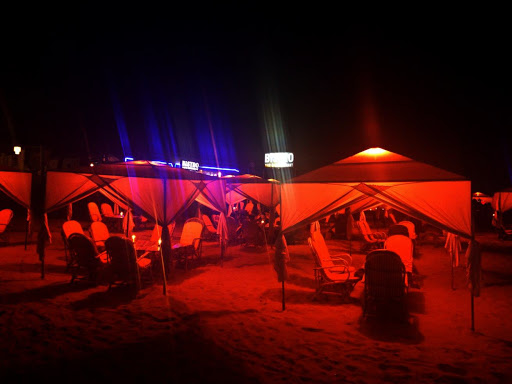

Goa Tour Packages
7Days/6Night
Jumbo Discount Price Rs.39,999/-
About the Destination
Goa houses numerous busy and mesmerizing beaches on one hand and beautifully built cathedrals and churches on the other. It is one of the best tourist spots in India. Every year, there are thousands of people who opt for a Goa travel package and visit the place to enjoy their vacations.
Experience Goa
Goa is a place where travellers get the chance to enjoy their day visiting places and their nights enjoying in bars, cafes and pubs. This would, of course, be an essential part of your Goa holiday package.
This place is mesmerizingly beautiful during the day and as the sun sets, the halogen lights along the street, pubs, and other party places make the place come alive once again. You can enjoy to your heart’s content here as there is always something to look forward to
Things to do in Goa:
- Visit Baga Beach
- Try Your Luck at the Deltin Royale Casino
- Marvel at the Chapora Fort
- Explore Grand Island
- Shop at the Arpora Night Market
Best Time to Visit Goa
- November - February (winter season):
This is the best time to visit Goa as the temperatures at the place are pleasant. During winters, Goa becomes quite crowded as most people come here to party and enjoy their vacations. During the entire month of December, Goa becomes the party capital of the nation and people of all age groups come here to celebrate festivals such as Christmas and New Year.
- March - May (summer season):
Summer starts in Goa from March as from here on, the temperature starts to rise. With high temperatures, the environment starts to turn humid as well. Most people don’t prefer coming to Goa during this time, but if you want to visit when the prices of hotels and homestays become reasonable, then this is the time for you.
- June - October (Monsoons):
It is mostly during mid-June when light showers cool the temperature a bit. And people start visiting to enjoy the rains. If you also love the monsoons and the beauty that Goa showcases during this season, then you can take a Goa trip package for your monsoon vacations.

|
|
|
 |
 |
|